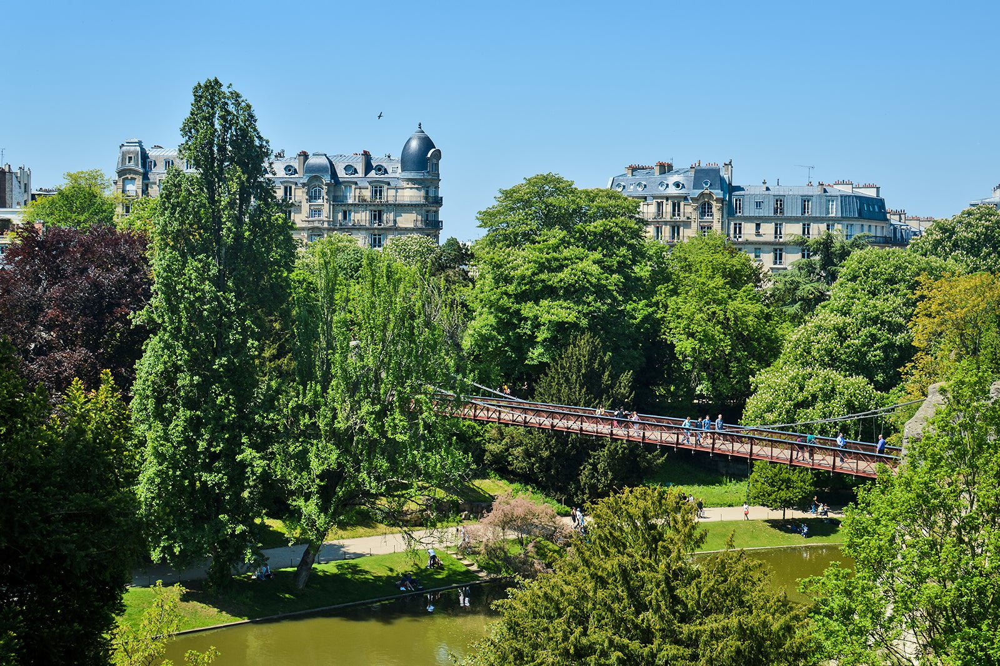

La tour Eiffel est l'un des monuments les plus emblématiques du monde et l'une des attractions les plus célèbres de Paris, en France. Conçue par l'ingénieur Gustave Eiffel, elle a été inaugurée en 1889 à l'occasion de l'Exposition universelle de Paris et devait initialement être démontée après l'exposition. Cependant, en raison de son succès et de son utilité en tant qu'antenne de télécommunications, elle est devenue permanente.
Le Parc des Princes est un stade emblématique situé dans le 16e arrondissement de Paris, en France. Il est principalement connu comme le domicile du Paris Saint-Germain Football Club (PSG), l'un des clubs de football les plus prestigieux en France et en Europe.
En plus d'être utilisé pour les matchs de football, le Parc des Princes accueille également d'autres événements sportifs et concerts. Il a été le théâtre de nombreuses grandes rencontres de football, y compris des matchs de la Coupe du Monde et de l'Euro, ainsi que des finales de la Ligue des Champions.

LA LOUVRE

PARC DES BUTTES-CHAUMONT
NOTRE DAME DE LA PAIX
HOTHEL DE CRILLON